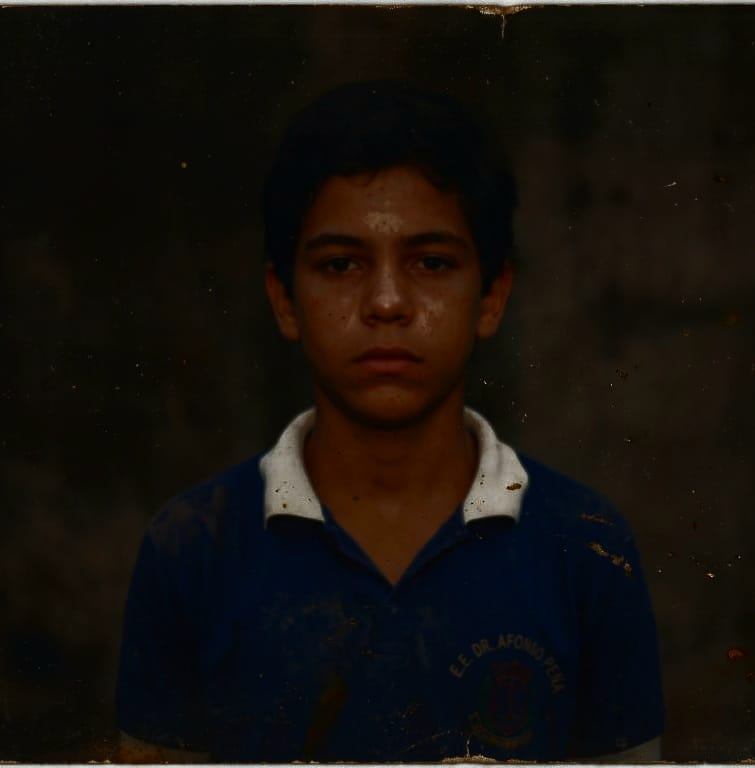

Bem-vindo ao arquivo digital do Parque Zoológico Vale Verde.
O Parque Zoológico Vale Verde atua na conservação, pesquisa e educação ambiental.
Arquivo público — 1983.
Alguns registros podem não estar disponíveis nesta versão do arquivo.
Para consultar documentos administrativos, utilize o TERMINAL.
O Parque Zoológico Vale Verde foi criado com o objetivo de promover a conservação da fauna, a pesquisa zoológica e a educação ambiental.
Durante a década de 1980, o parque ampliou suas atividades de pesquisa.
01 — VISITAÇÃO 02 — CONSERVAÇÃO 03 — PESQUISA 04 — [REGISTRO RESTRITO] 05 — ADMINISTRAÇÃO
O Vale Verde mantém registros de espécies utilizadas em programas de conservação, pesquisa e educação.
MYOTRAGUS BALEARICUS
Status histórico: EXTINTO
Origem: ILHAS BALEARES
Registro detalhado indisponível.
SISTEMA DE CONSULTA — ACESSO RESTRITO

STATUS: DESAPARECIDO
ÚLTIMO LOCAL REGISTRADO: SETOR 04
USUÁRIO: